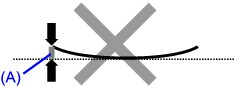
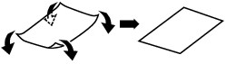
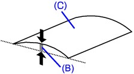
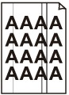

Paper Is Smudged
|
|
|
|
The Edges of Paper Are Smudged |
Printed Surface Is Smudged |
Printed Surface Is Scratched
-
Check 1: Did you confirm the paper and print quality settings?
-
Check 2: Is the appropriate type of paper used? Check the followings:
-
Check to see if the paper you are printing on is suitable for your printing purpose.
-
When performing Borderless Printing, make sure that the paper you are using is suitable for Borderless Printing.
If the paper you are using is not suitable for Borderless Printing, the print quality may be reduced at the top and bottom edges of the paper.
-
-
Check 3: Load the paper after correcting its curl.
-
For Plain Paper
Turn the paper over and reload it to print on the other side.
Leaving the paper loaded on the Rear Tray for a long time may cause the paper to curl. In this case, load the paper with the other side facing up. It may resolve the problem.
We recommend putting unused paper back into the package and keeping it on a level surface.
-
For Other Paper
If the curl on the four corners of the paper is more than 0.1 inch / 3 mm (A) in height, the paper may be smudged or may not be fed properly. In such cases, follow the procedure described below to correct the paper curl.
-
Roll up the paper in the opposite direction to the paper curl as shown below.
 -
Check that the paper is now flat.
We recommend printing curl-corrected paper one sheet at a time.
-
 Note
Note-
Depending on the media type, the paper may be smudged or may not be fed properly even if it is not curled inward. In such cases, follow the procedure described below to curl the paper outward within 0.1 inch / 3 mm (B) in height before printing. This may improve the print result.
(C) Printing side
We recommend printing paper that has been curled outward one sheet at a time.
-
-
Check 4: If you are printing on thick paper, select the Prevent paper abrasion setting.
Selecting the Prevent paper abrasion setting will widen the clearance between the Print Head and the loaded paper. If you notice abrasion even with the media type set correctly to match the loaded paper, set the machine to prevent paper abrasion by using the Operation Panel or the computer.
Print speed may be reduced if you are selecting the Prevent paper abrasion setting.
* Deactivate the Prevent paper abrasion setting once printing is complete. If not, this setting remains enabled for all subsequent print jobs.
-
To set by using the Operation Panel
Press the Setup button, then select Device settings and Print settings in this order, then set Prevent paper abrasion to ON.
 Changing the Machine Settings on the LCD
Changing the Machine Settings on the LCD -
To set by using your computer
In the Canon IJ Printer Utility, select Custom Settings in the pop-up menu, select the Prevent paper abrasion check box, and then click Apply.
To open the Canon IJ Printer Utility, see Opening the Canon IJ Printer Utility.
-
-
Check 5: If the intensity is set high, reduce the Intensity setting in the printer driver and try printing again.
If you are using plain paper to print images with high intensity, the paper may absorb too much ink and become wavy, causing paper abrasion.
-
When printing from your computer
Reduce the Intensity setting in the printer driver and try printing again.
-
Open the Print dialog.
-
Select Color Options in the pop-up menu.
-
Drag the Intensity slide bar to set the intensity.
-
-
When copying
-
-
Check 6: Is printing performed beyond the recommended printing area?
If you are printing beyond the recommended printing area of your printing paper, the lower edge of the paper may become stained with ink.
Resize your original document in your application software.
-
Check 7: Is the Platen Glass or the glass of ADF dirty?
Clean the Platen Glass or the glass of ADF.
Cleaning the Platen Glass and Document CoverNote-
If the glass of ADF is dirty, black streaks appear on the paper as shown below.

-
-
Check 8: Is the Paper Feed Roller dirty?
Clean the Paper Feed Roller.
Note-
Cleaning the Paper Feed Roller will wear the roller, so perform this procedure only when necessary.
-
-
Check 9: Is the inside of the machine dirty?
When performing duplex printing, the inside of the machine may become stained with ink, causing the printout to become smudged.
Perform the Bottom Plate Cleaning to clean the inside of the machine.
Cleaning the Inside of the Machine (Bottom Plate Cleaning)Note-
To prevent the inside of the machine from stains, set the paper size correctly.
-
-
Check 10: Set Ink Drying Wait Time longer.
Doing so gives the printed surface enough time to dry so that paper smudged and scratched are prevented.
-
Make sure that the machine is turned on.
-
Open the Canon IJ Printer Utility.
-
Select Custom Settings in the pop-up menu.
-
Drag the Ink Drying Wait Time slide bar to set the wait time, and then click Apply.
-
Confirm the message and click OK.
-
-
Check 11: Is the paper scratched by other loaded paper?
Depending on the media type, the paper may be scratched by other loaded paper when feeding from the Rear Tray. In this case, load one sheet at a time.